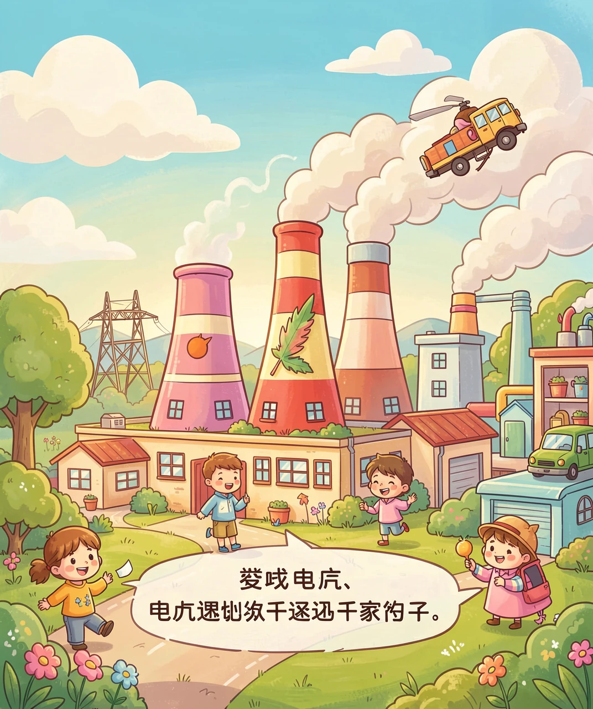
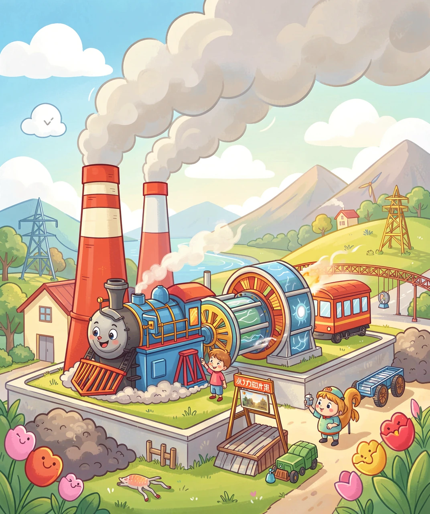
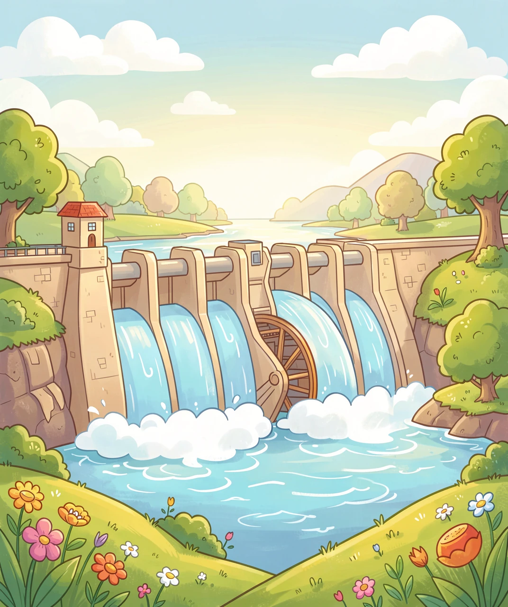
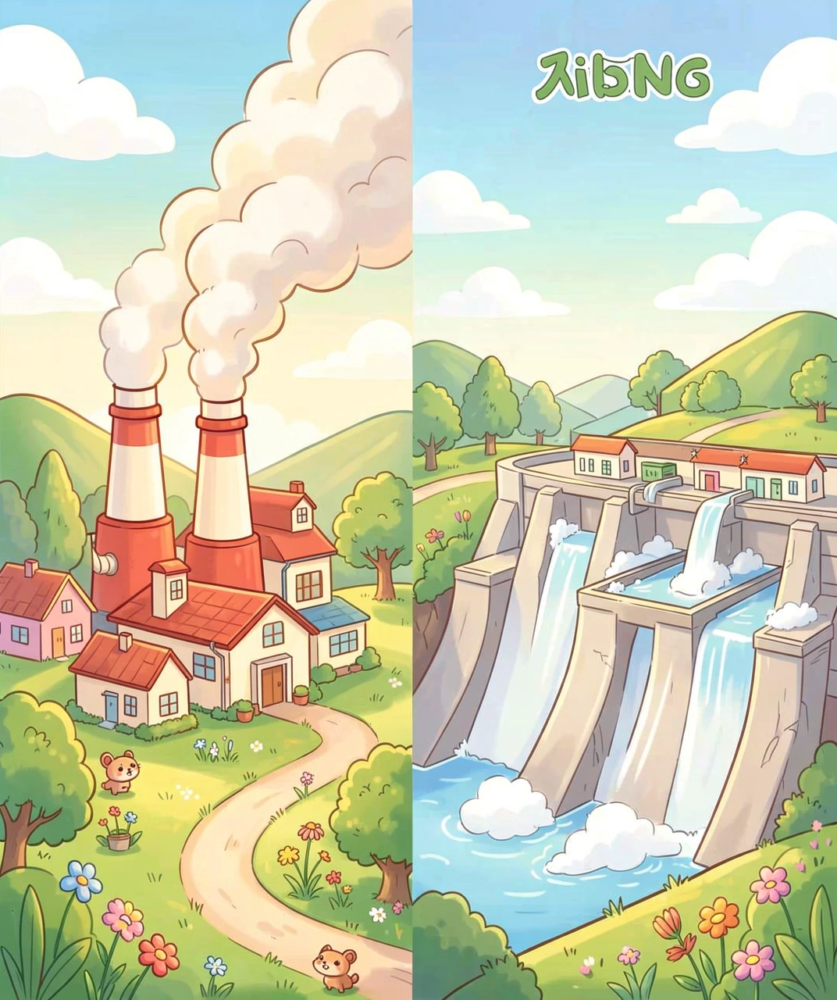
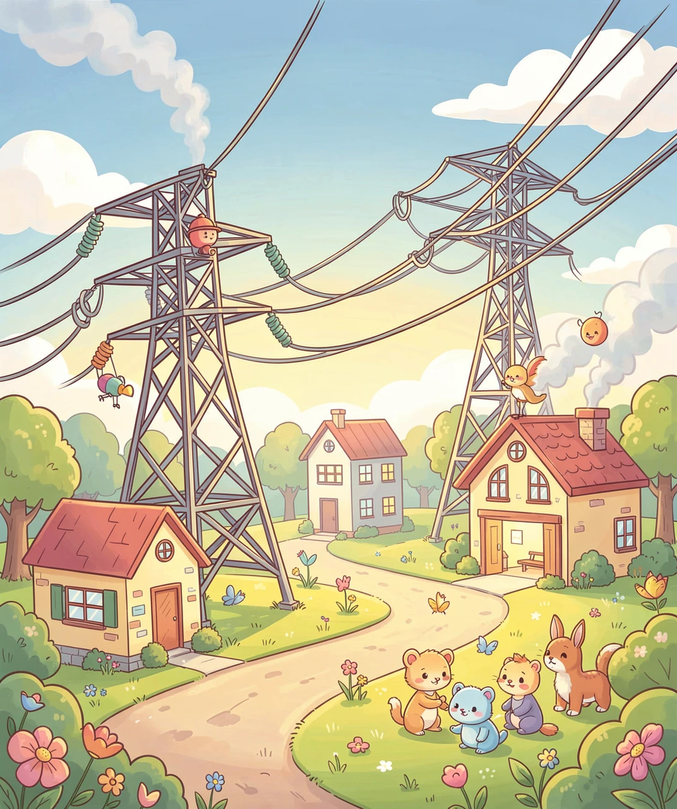

电，是从哪里「变」出来的？
晚上你「啪」地按一下开关，灯就亮了；电视、冰箱、空调，全都需要电。可是你有没有想过，这些电是从哪里来的？又是怎么跑进你家的？
电不会自己凭空冒出来，它是人们用各种办法「造」出来的。造电的地方，叫做发电厂。发电厂就像一个个巨大的「电工厂」，每天都在不停地生产电。
造电的办法有很多种，其中最最常见、最重要的两种，就是火力发电和水力发电。今天，我们就走进这两座「电工厂」，看看电到底是怎么被「变」出来的。

火力发电，靠的是「烧」。烧什么呢？主要是煤，还有天然气、石油这些燃料。
它的做法是这样的：把煤放进一个大锅炉里烧，烧出大量的热。这些热把水煮开，变成温度很高、压力很大的水蒸气。这股「气」特别有劲，像吹气球一样，猛地冲向一个大大的「风扇」——汽轮机，把它的叶片吹得飞快地转起来。
汽轮机一转，就带动连在一起的发电机一起转。发电机一转，电就发出来了！你看，火力发电就像是「烧煤 → 烧水 → 蒸汽推机器 → 机器转出发电」这样一条流水线。

水力发电不用烧煤，它请来了大自然的帮手——水。
人们在大河上修起一座高高的大坝，把河水拦住，让水越积越多，形成一个大水库。水越积越高，就像憋足了劲的运动员。然后，让这些水从高处「哗」地冲下来。
高高冲下的水流，力气大得惊人。它冲过一个叫水轮机的「大水车」，把水轮机的叶片冲得呼呼直转。水轮机一转，又带动发电机转起来，电就发出来了。
所以，水力发电靠的是「水往低处流」的力量。而且它不用烧煤，不会冒黑烟，是一种非常干净的发电方式。

火力发电和水力发电，都能发电，但它们各有各的「脾气」。
火力发电的好处是：不管白天黑夜、刮风下雨，只要有煤，就能一直发，非常「靠得住」。但它有个大缺点：烧煤会冒出废气，比如二氧化碳，会让地球「发烧」（变暖），还会产生烟尘，污染空气。
水力发电的好处是：干净、不烧煤、不冒烟，而且水是能循环再用的，几乎不花钱买「燃料」。但它也有缺点：得先修大坝、建水库，要花很多钱；而且如果碰上大旱、水少了，发的电就会变少。
所以，两种发电方式各有利弊。聪明的做法是，把各种发电方式都用起来，互相补充。

电在发电厂里「造」出来之后，还要经过一场长途旅行，才能到你家。
首先，电要先「升压」，变成高压电。为什么要升压呢？因为电压高了，电在长长的电线上跑，就不容易在半路「漏」掉、浪费掉。你会看到野外立着一排排高大的铁塔，上面架着一根根高压电线，那就是电的「高速公路」。
电跑啊跑，来到你家附近，再经过变电站「降压」，变成安全电压，最后沿着电线，钻进你家的插座。你按下开关，灯就亮了。
所以，别小看那一盏小小的灯，它背后可有一整条「发电 → 输电 → 变电 → 用电」的大工程呢。每一度电，都来之不易，我们要好好珍惜。

（答案：B、B、B、A、B。你都答对了吗？）